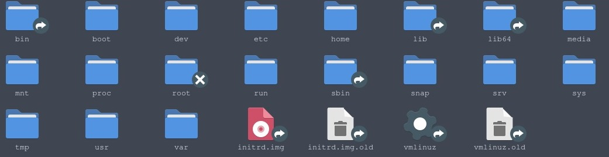

Arquivos do Linux explicados:

Bem você provavelmente já viu esses arquivos certo? Desde que você saiu do Windows e veio para o Linux
você olhou para isso e pensou "O que diabos é isso?" e bem, hoje eu te explico cada um deles.
bin:
O bin é basicamente o arquivo que contém os comandos essenciais para o user, no caso é nele que existe comandos
como: ls, cp, clear, etc.
boot:
Nesse aqui já são os arquvios necessários para iniciar o sistema, principalmente o kernel linux.
dev:
São os arquivos que representam os dispositivos do sistema como impressoras, pen drivers e até mesmo o HD ou SSD,
por isso que quando usamos o comando lsblk mostra algo como /dev/sdb ou até /dev/sda.
etc:
São os arquivos de configuração do sistema e de alguns serviços.
home:
Basicamente esse é o diretório pessoal do usuário, te dando acesso a área de trabalho
lib e lib64:
Esses 2 diretórios são duas bibliotécas compartilhadas e usadas pelos programas instalados na sua máquina.
media:
São os pontos de montagem para dispositivos removíveis como CD ou DVD e até pen drivers.
mnt:
São pontos temporários para manter sistemas de arquivos, no caso por exemplo quando você quer formatar um pen driver ou DVD ou CD
você pode literalmente salvar alguns arquivos deles no mnt temporáriamente.
proc:
São os sistemas de arquivos virtuais que mostram informações do kernel e de processos.
root:
Basicamente é um diretório pessoal com acesso administrativo (No caso é a pasta do administrador)
run:
São arquivos temporários usados durante a execução de um programa do sistema.
sbin:
São os programas essenciais para a administração do sistema (Que inclusive você só entra nesse arquivo como root)
srv:
São dados específicos dos serviços oferecidos pelo sistema (Por exemplo: Servidores web).
sys:
São os sistemas de arquivos virtuais para interface kernel.
tmp:
São arquivos temporários usados por programas.
usr:
São os programas e dados compartilhados entre usuários (Se caso o seu computador for mais de 1 usuário).
var:
Arquivos que mudam durante a execução. (Exemplo: Logs, caches e etc.)
Arquivos que estão na imagem mas são opcionais e não são de fato os principais:
snap:
O snap por mais que ele é um gerenciador de pacotes, ele quando instalado com o comando sudo apt install snapd, ele cria uma pasta
chamada snap, no caso todo pacote que você instalar via snap, vai pra lá.
initrd.img e initrd.img.old:
Bem esses são imagens usadas para inicializar o sistema antes de montar a raiz então... Se caso sua distro linux tem isso, não apague.
vmlinuz e vmlinuz.old:
São os arquivos do kernel Linux.